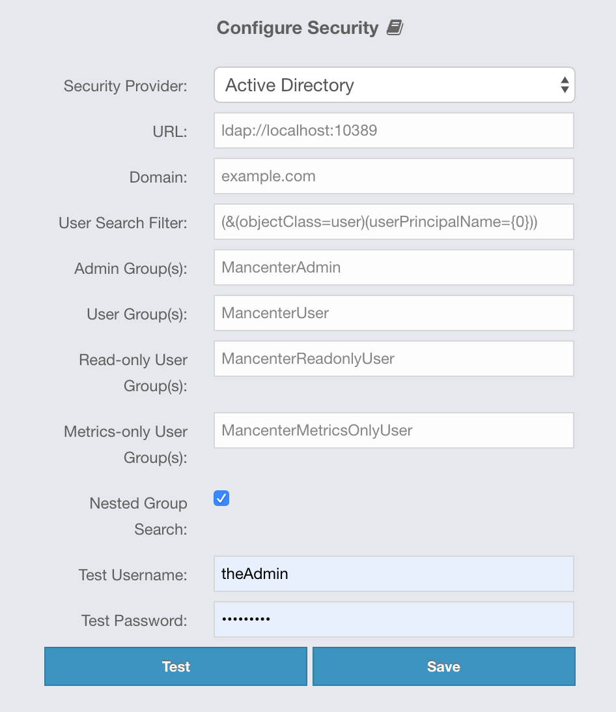

Authentication Options
As mentioned above, available security providers are Local, Active Directory, LDAP and JAAS. They are described in the following sections.
Local Authentication
You can use the Local security provider for authentication/authorization on the Management Center. In this case, the user accounts are stored in the Management Center’s database.

Provide the details in this form for the Local security provider:
-
Username: Username for the initial administrator user account.
-
Password, Confirm Password: Password for the initial administrator user account.
The password you enter should match the following criteria:
-
It should be at least 8 characters long.
-
It should not include the username.
-
It should contain at least one special character, which is not a letter, digit or space.
-
It should contain at least one letter.
-
It should contain at least one digit.
-
It should not contain two or more of the same letter following each other.
-
It should not contain a 3-character or longer sequence of letters following or preceeding each other, e.g., "abc" or "fed".
-
It should not contain a 3-character or longer sequence of digits following or preceeding each other, e.g., "123" or "987".
-
It should not match any of the words listed in the dictionary (you can find more details in the Using a Dictionary to Prevent Weak Passwords section).
You can also use the create-user command in the MC Conf tool to configure
the Local security provider without any UI interactions. See this command’s
description for details.
|
Active Directory Authentication
You can use your existing Active Directory server for authentication/authorization on the Management Center. In the "Configure Security" page, select Active Directory from the "Security Provider" combo box, and the following form page appears:

Provide the details in this form for your Active Directory server:
-
URL: URL of your Active Directory server, including the schema (
ldap://orldaps://) and port. -
Domain: Domain of your organization on Active Directory.
-
User Search Filter: LDAP search filter expression to search for the users.
{0}will be replaced withusername@domainand{1}will be replaced with only theusername. You can use both placeholders, only one of them or none in your search filter. For example,(&(objectClass=user)(userPrincipalName={0}))searches for a username that matches with theuserPrincipalNameattribute and member of the object classuser. -
Admin Group(s): Members of this group and its nested groups have admin privileges on the Management Center. To use more than one group, separate them with a semicolon (;).
-
User Group(s): Members of this group and its nested groups have read and write privileges on the Management Center. To use more than one group, separate them with a semicolon (;).
-
Read-only User Group(s): Members of this group and its nested groups have only read privilege on the Management Center. To use more than one group, separate them with a semicolon (;).
-
Metrics-only Group(s): Members of this group and its nested groups have the privilege to see only the metrics on Management Center. To use more than one group, separate them with a semicolon (;).
-
Nested Group Search: Disable if you have a large LDAP group structure and it takes a long time to query all nested groups during login.
-
Test Username: Username to test the Active Directory configuration with. Note that this value will not be saved and only be used for testing the Active Directory configuration.
-
Test Password: Password to test the Active Directory configuration with. Note that this value will not be saved and only be used for testing the Active Directory configuration.
Before saving the configuration, you can test it by clicking the Test button. Note that the user you test with needs to be a member of one of the groups you have configured for the Management Center.
You can use the hazelcast.mc.ldap.timeout system property to
specify both connect and read timeout values for Active Directory search
queries. It is in milliseconds and its default value is 3000 milliseconds.
|
Configuration Hot Reload
Once configured, Active Directory settings are saved in a local database managed by Management Center.
If you need to update your settings afterwards, you need to provide the import properties file under <hazelcast-mc>/import/securityHotReload.properties, and then click on the Reload Security Config button on the login page.
The securityHotReload.properties should contain the following properties:
url=<active directory instance url>
domain=<domain>
adminGroup=<Admin group(s). Use ';' to separate multiple groups>
userGroup=<Read-write group(s). Use ';' to separate multiple groups>
readonlyUserGroup<Read-only group(s). Use ';' to separate multiple groups>
metricsOnlyGroup<Metrics-only group(s). Use ';' to separate multiple groups>
The Reload Security Config button will only appear
when the <hazelcast-mc>/import/securityHotReload.properties file is present.
After a successful import, the file will be renamed as importedSecurityHotReload-<import_timestamp>.properties.bak.
|
Alternatively, you can use MC-Conf tool’s security reset and active-directory configure tasks to
configure the Active Directory security provider from scratch,
but you need to stop the Management Center service for this configuration option.
See the Management Center Configuration Tool section for more information.
Enabling TLS/SSL for Active Directory
If your Active Directory service is using TLS/SSL protocol, use the following command line parameters for your Management Center deployment:
-
-Djavax.net.ssl.trustStore: Path to the truststore. -
-Djavax.net.ssl.trustStorePassword: Password of the truststore.
These properties override the cacerts with your own truststore.
JAAS Authentication
You can use your own javax.security.auth.spi.LoginModule implementation
for authentication/authorization on the Management Center. In the "Configure Security"
page, select JAAS from the "Security Provider" combo box, and the following
page appears:

Provide the details in this form for your JAAS LoginModule implementation:
-
Login Module Class: Fully qualified class name of your
javax.security.auth.spi.LoginModuleimplementation. -
Admin Group: Members of this group have admin privileges on the Management Center.
-
User Group: Members of this group have read and write privileges on the Management Center.
-
Read-only User Group: Members of this group have only read privilege on the Management Center.
-
Metrics-only Group: Members of this group have the privilege to see only the metrics on the Management Center.
The following is an example implementation. Note that we return two java.security.Principal
instances; one of them is the username and the other one is a group name, which
you will use when configuring JAAS security as described above.
import javax.security.auth.Subject;
import javax.security.auth.callback.Callback;
import javax.security.auth.callback.CallbackHandler;
import javax.security.auth.callback.NameCallback;
import javax.security.auth.callback.PasswordCallback;
import javax.security.auth.login.LoginException;
import javax.security.auth.spi.LoginModule;
import java.security.Principal;
import java.util.Map;
public class SampleLoginModule implements LoginModule {
private Subject subject;
private String password;
private String username;
@Override
public void initialize(Subject subject, CallbackHandler callbackHandler, Map<String, ?> sharedState, Map<String, ?> options) {
this.subject = subject;
try {
NameCallback nameCallback = new NameCallback("prompt");
PasswordCallback passwordCallback = new PasswordCallback("prompt", false);
callbackHandler.handle(new Callback[] {nameCallback, passwordCallback });
password = new String(passwordCallback.getPassword());
username = nameCallback.getName();
} catch (Exception e) {
throw new RuntimeException(e);
}
}
@Override
public boolean login() throws LoginException {
if (!username.equals("emre")) {
throw new LoginException("Bad User");
}
if (!password.equals("pass1234")) {
throw new LoginException("Bad Password");
}
subject.getPrincipals().add(new Principal() {
public String getName() {
return "emre";
}
});
subject.getPrincipals().add(new Principal() {
public String getName() {
return "HazelcastMCAdmin";
}
});
return true;
}
@Override
public boolean commit() throws LoginException {
return true;
}
@Override
public boolean abort() throws LoginException {
return true;
}
@Override
public boolean logout() throws LoginException {
return true;
}
}LDAP Authentication
You can use your existing LDAP server for authentication/authorization on the Management Center. In the "Configure Security" page, select LDAP from the "Security Provider" combo box, and the following form page appears:

Provide the details in this form for your LDAP server:
-
URL: URL of your LDAP server, including schema (
ldap://orldaps://) and port. -
Distinguished name (DN) of user: DN of a user that has admin privileges on the LDAP server. It is used to connect to the server when authenticating users.
-
User DN: DN to be used for searching users.
-
Group DN: DN to be used for searching groups.
-
Admin Group(s): Members of this group and its nested groups have admin privileges on the Management Center. To use more than one group, separate them with a semicolon (;).
-
User Group(s): Members of this group and its nested groups have read and write privileges on the Management Center. To use more than one group, separate them with a semicolon (;).
-
Read-only User Group(s): Members of this group and its nested groups have only read privilege on the Management Center. To use more than one group, separate them with a semicolon (;).
-
Metrics-only Group(s): Members of this group and its nested groups have the privilege to see only the metrics on the Management Center. To use more than one group, separate them with a semicolon (;).
-
Start TLS: Enable if your LDAP server uses Start TLS operation.
-
User Search Filter: LDAP search filter expression to search for the users. For example,
uid={0}searches for a username that matches with theuidattribute. -
Group Search Filter: LDAP search filter expression to search for the groups. For example,
uniquemember={0}searches for a group that matches with theuniquememberattribute. -
Nested Group Search: Disable if you have a large LDAP group structure and it takes a long time to query all nested groups during login.
Values for Admin, User, Read-only and Metrics-Only group names must
be given as plain names. They should not contain any LDAP attributes such
as CN, OU and DC.
|
You can use the hazelcast.mc.ldap.timeout system property to
specify connect and read timeout values for LDAP search queries.
It is in milliseconds and its default value is 3000 milliseconds.
|
Configuration Hot Reload
Once configured, LDAP settings are saved in a local database managed by Management Center.
If you need to update your settings afterwards, you need to provide the import properties file under <hazelcast-mc>/import/securityHotReload.properties, and then click on the Reload Security Config button on the login page.
The securityHotReload.properties should contain the following properties:
url=<Ldap URL>
username=<Distinguished name (DN) of user>
password=<password>
userDn=<User DN>
groupDn<Group DN>
startTls=<true|false>
adminGroup=<Admin group(s). Use ';' to separate multiple groups>
userGroup=<Read-write group(s). Use ';' to separate multiple groups>
readonlyUserGroup<Read-only group(s). Use ';' to separate multiple groups>
metricsOnlyGroup<Metrics-only group(s). Use ';' to separate multiple groups>
userSearchFilter=<User Search Filter>
groupSearchFilter=<Group Search Filter>
nestedGroupSearch=<true|false>
The Reload Security Config button will only appear
when the <hazelcast-mc>/import/securityHotReload.properties file is present.
After a successful import, the file will be renamed as importedSecurityHotReload-<import_timestamp>.properties.bak.
|
Alternatively, you can use MC-Conf tool’s security reset and active-directory configure tasks to
configure the Active Directory security provider from scratch,
but you need to stop the Management Center service for this configuration option.
See the Management Center Configuration Tool section for more information.
Enabling TLS/SSL for LDAP
If your LDAP server is using ldaps (LDAP over SSL) protocol or the Start
TLS operation, use the following command line
parameters for your Management Center deployment:
-
-Dhazelcast.mc.ldap.ssl.trustStore: Path to the truststore. This truststore needs to contain the public key of your LDAP server. -
-Dhazelcast.mc.ldap.ssl.trustStorePassword: Password of the truststore. -
-Dhazelcast.mc.ldap.ssl.trustStoreType: Type of the truststore. Its default value is JKS. -
-Dhazelcast.mc.ldap.ssl.trustManagerAlgorithm: Name of the algorithm based on which the authentication keys are provided. System default is used if none is provided. You can find out the default by calling thejavax.net.ssl.TrustManagerFactory#getDefaultAlgorithmmethod.
Password Encryption
By default, the password that you use in the LDAP configuration is stored in a plain text in a local database. This might pose a security risk. To store the LDAP password in an encrypted form, we offer the following options:
-
Provide a keystore password: This creates and manages a Java keystore under the Management Center home directory. The LDAP password is stored in this keystore in an encrypted form.
-
Configure an external Java keystore: This uses an existing Java keystore. This option might also be used to store the password in an HSM that provides a Java keystore API.
In the case of using either one of the options, the LDAP password you enter on the initial configuration UI dialog will be stored in an encrypted form in a Java keystore instead of the local database.
| You can also encrypt the password, and provide it in an encrypted form, when configuring LDAP security provider. See the Variable Replacers section for more information. |
Providing a Master Key for Encryption
There are two ways to provide a master key for encryption:
-
If you deploy the Management Center on an application server, you need to set the
MC_KEYSTORE_PASSenvironment variable before starting Management Center. This option is less secure. You should clear the environment variable once you make sure you can log in with your LDAP credentials to minimize the security risk. -
If you’re starting the Management Center from the command line, you can start it with
-Dhazelcast.mc.askKeyStorePassword. The Management Center asks for the keystore password upon start and use it as a password for the keystore it creates. This option is more secure as it only stores the keystore password in the memory.
By default, the Management Center creates a Java keystore file under the
Management Center home directory with the name mc.jceks. You can
change the location of this file by using the
-Dhazelcast.mc.keyStore.path=/path/to/keyStore.jceks JVM argument.
Configuring an External Java KeyStore
If you don’t want the Management Center to create a keystore for you and use an existing one that you’ve created before (or an HSM), set the following JVM arguments when starting the Management Center:
-
-Dhazelcast.mc.useExistingKeyStore=true: Enables use of an existing keystore. -
-Dhazelcast.mc.existingKeyStore.path=/path/to/existing/keyStore.jceks: Path to the keystore. You do not have to set it if you use an HSM. -
-Dhazelcast.mc.existingKeyStore.pass=somepass: Password for the keystore. You do not have to set it if HSM provides another means to unlock HSM. -
-Dhazelcast.mc.existingKeyStore.type=JCEKS: Type of the keystore. -
-Dhazelcast.mc.existingKeyStore.provider=com.yourprovider.MyProvider: Provider of the keystore. Leave empty to use the system provider. Specify the class name of your HSM’sjava.security.Providerimplementation if you use an HSM.
| Make sure your keystore supports storing `SecretKey`s. |
Updating Encrypted Passwords
You can use the update-ldap-password command in the MC Conf tool to update
the encrypted LDAP password stored in the keystore. See this command’s
description for details.
SAML Authentication
You can use SAML single sign-on with Management Center. In the "Configure Security" page, select SAML from the "Security Provider" combo box, and the following form page appears:

Provide the details in this form for SAML:
-
Relying Party Identifier: The application-defined unique identifier that is the intended audience of the SAML assertion. This is most often the Service Provider Entity ID of your application.
-
Post Back URL: URL of the Management Center SAML assertion consumer, including schema (
http://orhttps://) and port. Assertion consumer is located under the path/saml/ssoso you should append/saml/ssoto the Management Center URL. Your Identity Provider should have access to this URL as it will post back SAML responses to it. For example, if Management Center and the Identity Provider are on the same machine, you would enter “http://127.0.0.1:8080/saml/sso”. -
Group Attribute: Name of the attribute that contains group of the user.
-
Identity Provider Metadata: Your Identity Provider’s metadata in XML format.
-
Group Name Separator: Separator for the group names in case the group attribute value contains more than one group.
-
Admin Group(s): Members of this group have admin privileges on the Management Center. To use more than one group, separate them with the group name separator you have configured.
-
User Group(s): Members of this group have read and write privileges on the Management Center. To use more than one group, separate them with the group name separator you have configured.
-
Read-only User Group(s): Members of this group have only read privilege on the Management Center. To use more than one group, separate them with the group name separator you have configured.
-
Metrics-only Group(s): Members of this group have the privilege to see only the metrics on the Management Center. To use more than one group, separate them with the group name separator you have configured.
| If the user has more than one authority, Management Center uses the highest one. |
Once you configure SAML, a button for single sign-on will be shown in the login page. Clicking it will start the SAML single sign-on process. If you don’t have an existing session with your Identity Provider, you will be taken to the login page of your Identity Provider. Once you log into your Identity Provider, you will be redirected back to Management Center as a logged in user.
| If your Identity Provider needs service provider metadata XML, you can use the following URL to view/download it once you configure SAML: “http://<MC URL>/saml/metadata”. |
OpenID Connect Authentication
You can use OpenID Connect single sign-on with Management Center. In the "Configure Security" page, select OpenID Connect from the "Security Provider" combo box, and the following form page appears:

Provide the details in this form for OpenID Connect:
-
Client ID: The OAuth2 client ID that you obtain from your OpenID provider.
-
Client Secret: The OAuth2 client secret you obtain from your OpenID provider.
-
Authorization Endpoint: Authorization endpoint URL of your OpenID provider.
-
User Info Endpoint: User info endpoint URL of your OpenID provider.
-
Token Endpoint: Token endpoint URL of your OpenID provider.
-
JWK Set Endpoint: JWK set endpoint URL of your OpenID provider.
-
Issuer: Issuer identifier of your OpenID provider. It is usually (but not always) a URL.
-
Redirect URL: URL of the Management Center endpoint that handles responses to authentication requests, including schema (
http://orhttps://) and port. It is located under the path/oidc/auth, so you should append/oidc/authto the Management Center URL. Your OpenID provider should have access to this URL as it will post back responses to authentication requests to this URL. For example, if Management Center and the OpenID provider are on the same machine, you would enter “http://127.0.0.1:8080/oidc/auth”. -
Groups Claim Name: Name of the claim that contains group(s) of the user.
-
JWS Algorithm: JWS algorithm to use.
-
UserInfo Request HTTP Method: HTTP method to use for sending a UserInfo request. Either
GETorPOST. Default value isGET. Note that IBM MCM requires this to bePOST. -
Send Client Info in Token Request: Whether Management Center should send client ID and client secret as extra parameters in the token request. "No" by default. Note that IBM MCM requires these extra parameters in its token endpoint, so it should be "Yes" when deployed there.
-
Admin Group(s): Members of this group have admin privileges on the Management Center. To use more than one group, separate them with the group name separator you have configured.
-
User Group(s): Members of this group have read and write privileges on the Management Center. To use more than one group, separate them with the group name separator you have configured.
-
Read-only User Group(s): Members of this group have only read privilege on the Management Center. To use more than one group, separate them with the group name separator you have configured.
-
Metrics-only Group(s): Members of this group have the privilege to see only the metrics on the Management Center. To use more than one group, separate them with the group name separator you have configured.
| If the user has more than one authority, Management Center uses the highest one. |
Once you configure OpenID Connect, a button for single sign-on will be shown in the login page. Clicking it will start the OpenID Connect single sign-on process. If you don’t have an existing session with your OpenID provider, you will be taken to the login page of your OpenID provider. Once you log into your OpenID provider, you will be redirected back to Management Center as a logged in user.
Management Center uses the sub claim to determine the user’s ID and the preferred_username
claim to determine which username to show in the user interface, as explained in the OpenID Connect
specification. Make sure your OpenID provider returns these two claims when asked for.
|